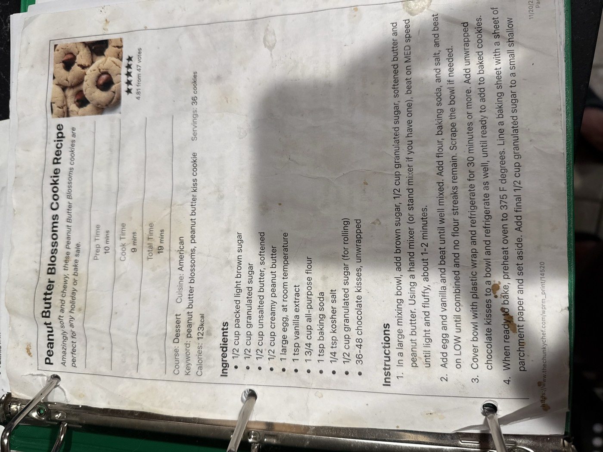

Peanut Butter Blossoms

Amazingly soft and chewy peanut butter cookies rolled in sugar and topped with a chocolate kiss — perfect for any holiday or bake sale. Makes about 36 cookies.
36cookies
10 minprep time
9 mincook time
Vegetariandiet
Ingredients
- ½ cup packed light brown sugar
- ½ cup granulated sugar
- ½ cup unsalted butter, softened
- ½ cup creamy peanut butter
- 1 large egg, at room temperature
- 1 tsp vanilla extract
- 1¾ cups all-purpose flour
- 1 tsp baking soda
- ¼ tsp kosher salt
- ½ cup granulated sugar, for rolling
- 36–48 chocolate kisses, unwrapped
Method
- Cream the base. In a large mixing bowl, add the brown sugar, ½ cup granulated sugar, softened butter, and peanut butter. Using a hand mixer (or stand mixer), beat on medium speed until light and fluffy, about 1–2 minutes.
- Add wet, then dry. Add the egg and vanilla and beat until well mixed. Add the flour, baking soda, and salt and beat on low until combined and no flour streaks remain. Scrape the bowl if needed.
- Chill. Cover the bowl with plastic wrap and refrigerate for 30 minutes or more. Put the unwrapped chocolate kisses in a bowl and refrigerate them too, until ready to use.
- Shape and bake. When ready to bake, preheat the oven to 375°F. Line a baking sheet with parchment paper. Put the final ½ cup granulated sugar in a small shallow bowl, roll the chilled dough into 1-inch balls, and coat each in the sugar. Bake per the card's 9-minute cook time, until set, then press a chocolate kiss into the center of each cookie right out of the oven.
Scan note: the card's final step was cut off in the photo after "small shallow bowl" — the rolling and baking above is the standard finish for this style of cookie, using the card's own stated 9-minute cook time, not verbatim card text.